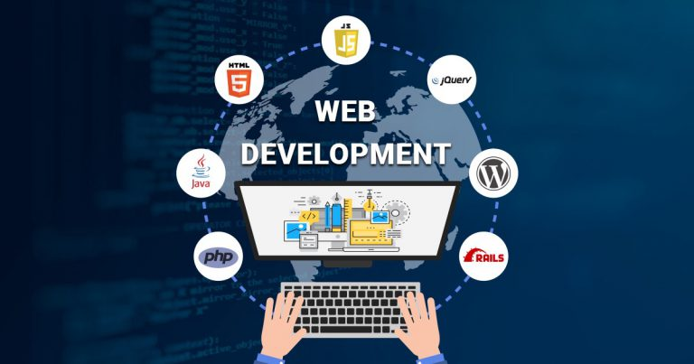
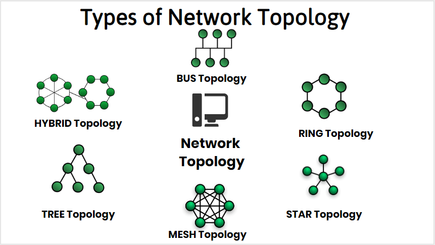

Delivered in a modular format, this course is the study of algebraic
and transcendental functions is an essential prerequisite to Calculus.
CST8101
Computer Essential
Level 1
The essentials of computer software, hardware, and laptop management
form the foundation for building further technical programming skills.
Learn to configure your laptop environment, basic PC and troubleshoot problems.
CST8284
Object Oriented Programming (Java)
Level 2
Working in the field of information technology as a programmer requires
a firm understanding of Object-Oriented Programming (OOP) concepts.
Students explore object-oriented programming methodology using the Java programming language.

CST8285
Web Programming
Level 2
The World Wide Web (WWW) has become an integrated part of everyday life.
Students develop basic skills of web programming, website design and implementation.
JavaScript, HTML5, and PHP are used to explore web-based solutions to problems
of increasing interactivity and complexity.
CST2335
Mobile Graphical Interface Programming
Level 3
Mobile devices play an instrumental part of everyday life,
thus requiring knowledge of mobile graphical user interface development.
Students explore graphical user interface programming in a mobile Android environment.

CST8109
Network Programming
Level 3
Software programming requires detailed knowledge of the underlying network topology,
its implementation and programming support functions. Gaining an appreciation and perspective
of this technology is imperative to developing good network programming applications.
GEP1001
Cooperative Education Rediness (CO-OP)
2022 Fall
Cooperative education (Co-op) allows students to integrate their classroom
learning with a real-world experience though paid work terms.